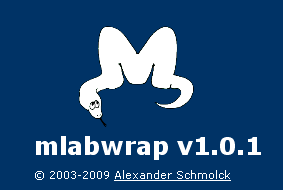
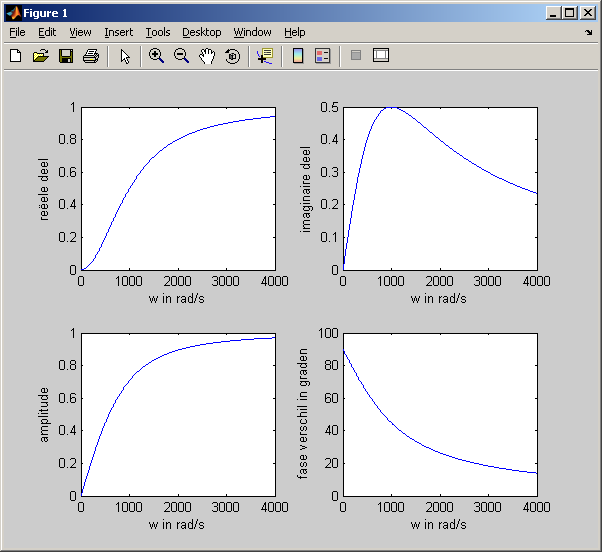
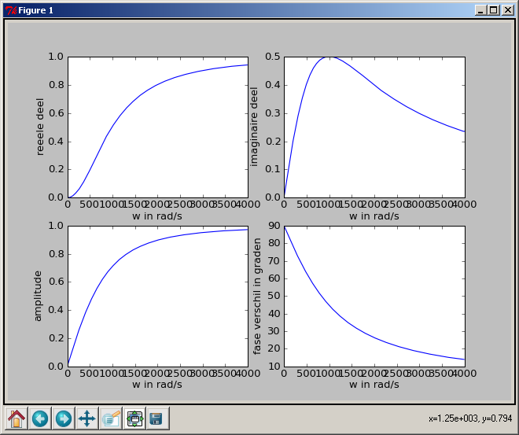

Coming from MatLab  (february 2009)
(february 2009)
Application Designer / Domain Expert / Control Designer / Core Developer
Translating MatLab
LiberMate: SourceForge.net LiberMate
One MatLab per Child
Projects An Open-Source MATLAB®-to-Python Compiler
MLabWrap: Revision 2099 trunkmlabwrap
MatLab from other languages: MATLAB
Embedding MatLab
Sounds very good: MLabWrap 
I only embedded MatLab in (realtime) signal analysis is Delphi, which works reasonable well, if you can find the right block size, to optimize the communication speed compared to an accepted delay.
I never used MatLab embedding in Python (why should you :-) , but here are some links.
Using the MATLAB Engine to Call MATLAB Software from C and Fortran Programs
LiberMate  ( february 2009 )
( february 2009 )
Application Designer / Domain Expert / Control Designer / Core Developer
First test
HPF_graph.m

